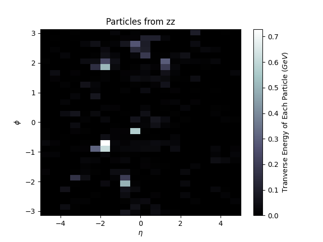
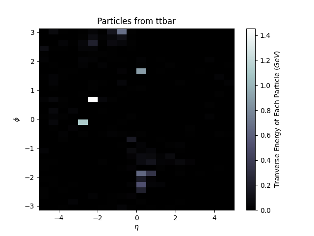
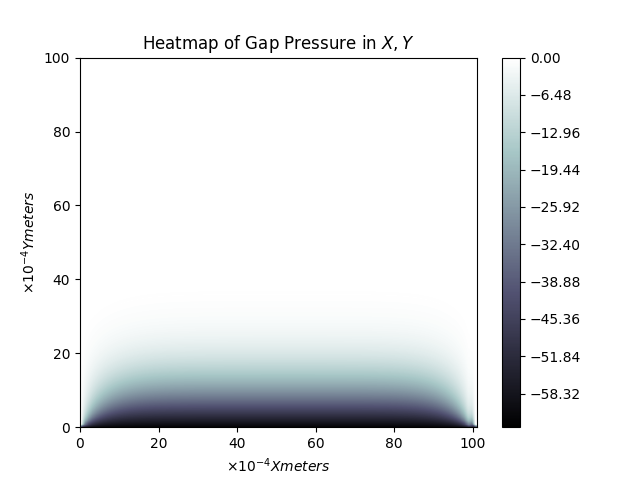
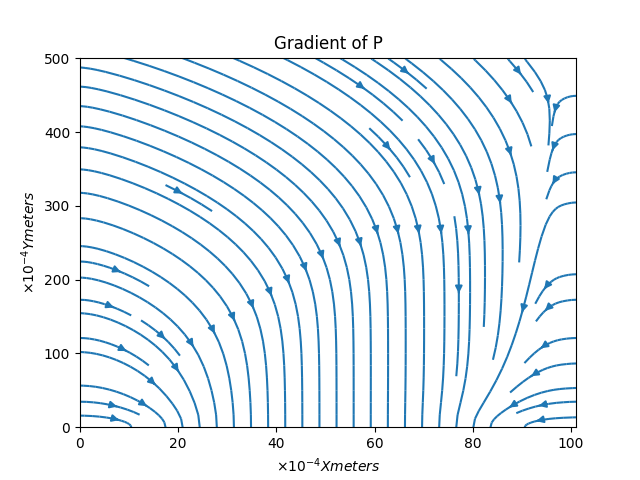

About Yanall
Graduated from University of California, Santa Cruz in 4 years with a Bachelor of Science (B.S.) in
Physics and B.S. in Computer Science. He
spends most of his time learning skills or hobbies such as making music, cybersecurity, piloting, and
DIY raspberry pi projects.
Yanall currently works as a Software Engineer for a research lab with DCS Corp and accepts small contracts
over the weekends. He works heavily with Unreal Engine, Machine Learning (TensorFlow, PyTorch, Jax),
Python, Linux Bash systems, Web / Lab Databases, Block Chain services, and Open Source Intelligence.
Yanall is also a jazz muscian of 20 years, his primary instruments are Piano, Violin, and Trombone, and is
always open to working on creative projects.
Contact and CV
A copy of his CV can be accessed here.
For all inquiries, please email him at YanallBoutros@Protonmail.com
PGP Key
If you would like to add him to your key ring, his public key is provided here.
Back End Developer, Researcher
Yanall brings a wide breadth of
knowledge supported with a strong depth of applied logic and abstract reasoning.
Recent contracts:
- Simulated subsytems failure for ground vehicles, fixed physics body asset issues in Unreal Engine
- Implemented gpu accelerated multiproccesed Automatic Speech Recognition transcription service in
Kaldi/Vosk. Made correction tool to build unique database and improve lexicon
- Researched Text to 3D model generation with NeRF, ZeroShot, ImageGen, and Stable Diffusion
- Made order queue backend in NodeJS and Postgres SQL
- Derived unique combinatorics based on client information and hashing algorithms,
then wrote custom Haskell code
for data recovery purposes
- Set-up internal home surveillance network
- Investigated individuals and LLCs associated with unlawful evictions
- Investigated individuals and nonprofits associated with tax evasion
Professional Musician
Yanall plays Piano, Violin, and Trombone (Some tracks are listed below).
He has no interest in becoming a professional performer, however
still enjoys collaborating with other musicians, and will happily feature in any
tracks they might invite him to help with. For private tutoring, his rate is $50 an hour.
Featured Projects
ParticleSHAI
 
Particle Simulations Histograms Artificial Intelligence is a Data Analysis Framework
written in Python. Packages such as Pythia, Pyjet, Matplotlib, and TensorFlow are utilized as the back end to
simulate events in the Large Hadron Collider. For more information, please refer the Thesis paper here.
Ising Model Simulation

The Ising model displays the thermodynamic properties of a ferromagnet by simulating the interactions of N2
atoms (or spin-sites) on an N × N grid. In the animation above, energy is gradually increased in time, until the
structure of the lattice becomes more chaotic, indicating a phase change. For more information,
please refer the original report here.
Simulations of Partial Differential Equations

Simulation of needle with surfaces cooled to -20 Celsius and inlet temperature set to a sine function. The simulation
has been sped up to fit in a gif. In the program, time is an input controlled by a slider. To represent the
passage of time in a simulation that's been sped up ~31x, a repeat in the brightness of the pipe indicates ~10 seconds have passed
in the simulation.


Contour heat-map of pressure in a mask gap and
Plot of force density vector field.